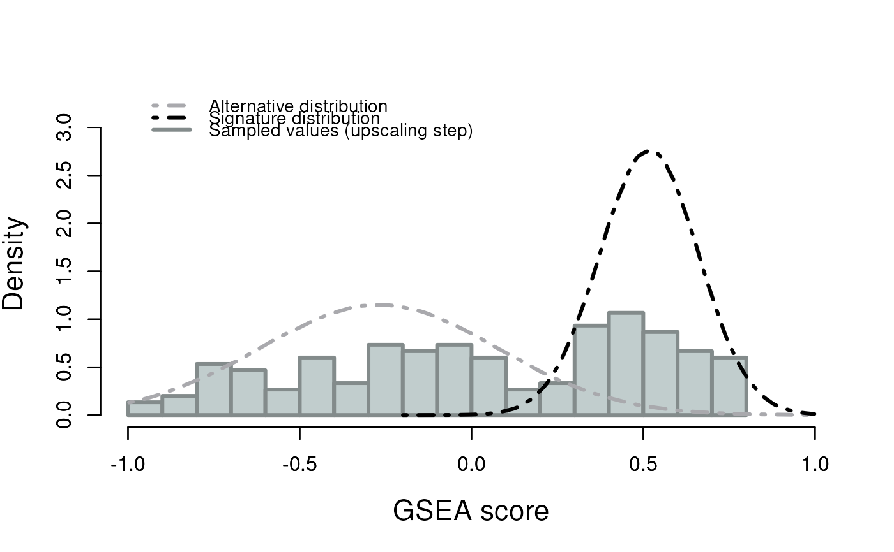

R/externalGraphFunctions.R
plotDensityWithUpscalingSamples.RdTODO
plotDensityWithUpscalingSamples(
x,
signature,
colorSignature = "black",
colorAlternative = "#A9A9AD",
colorBorderSamples = "azure4",
colorFillingSamples = "azure3"
)a list of class "splitTypeResults", the output object
from runSubtypingfunction, to be graphed.
a character string representing the signature
that will be used to create the graph. The signature must
be present in the object.
a character string representing the color of
the signature distribution curve. Default: "black".
a character string representing the color of
the alternative distribution curve. Default: "#A9A9AD".
a character string representing the color
of the histogram border for the sample distribution.
Default: "azure4".
a character string representing the
color of the histogram filling for the sample distribution.
Default: "azure3".
## Loading signatures
data("signaturesDemo")
## Load demo normalized expected counts for 30 patients
data("expNormalCountsDemo")
## Fix seed for reproducibility
set.seed(1221)
## Run classification on the 30 patients using 20 permutations on 75% of
## the dataset, and 10 points per patient for the up-scaling step
results <- runSubtyping(geneLists=signaturesDemo,
expectedCountsMatrix=expNormalCountsDemo,
permRatio=0.75, permNbr=20, upscaleNbr=5)
#> number of iterations= 37
#> number of iterations= 24
## Graph result
plotDensityWithUpscalingSamples(x=results,
signature="2018_Tiriac_PDAC_PDO_classical_signature")
